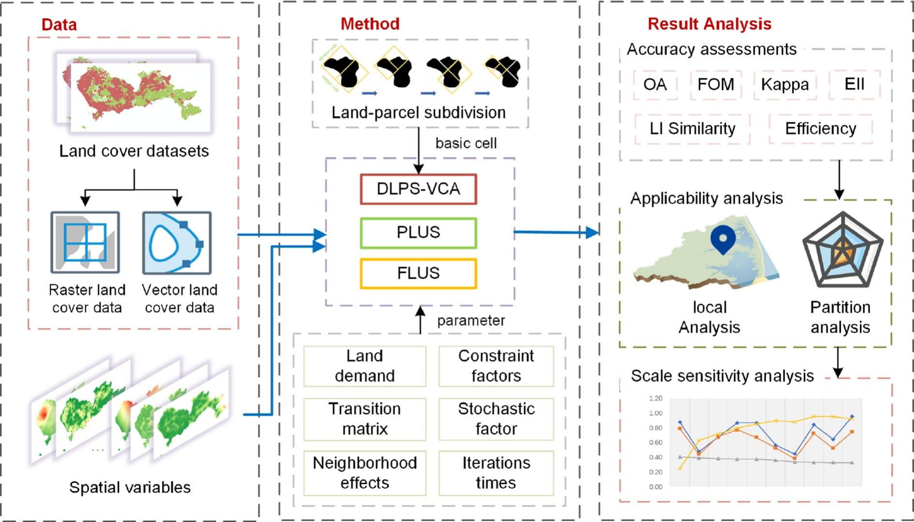
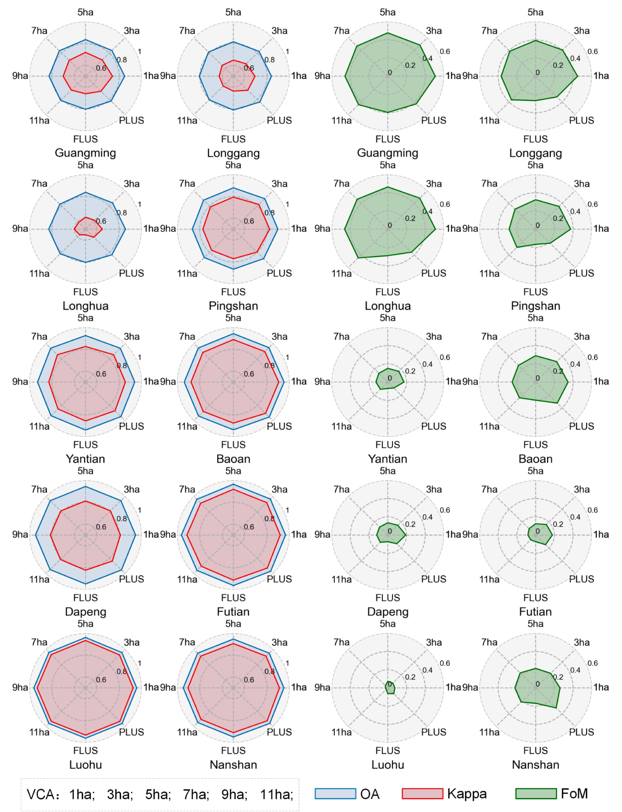
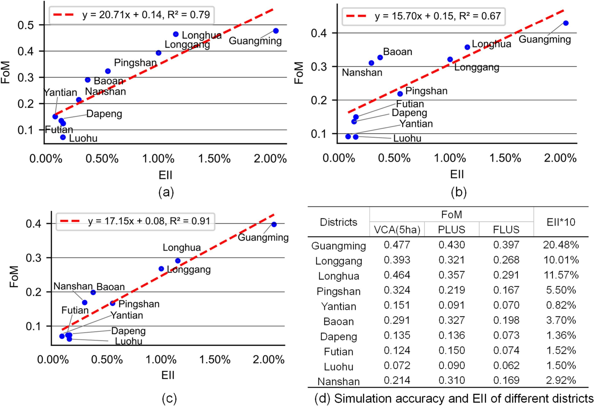
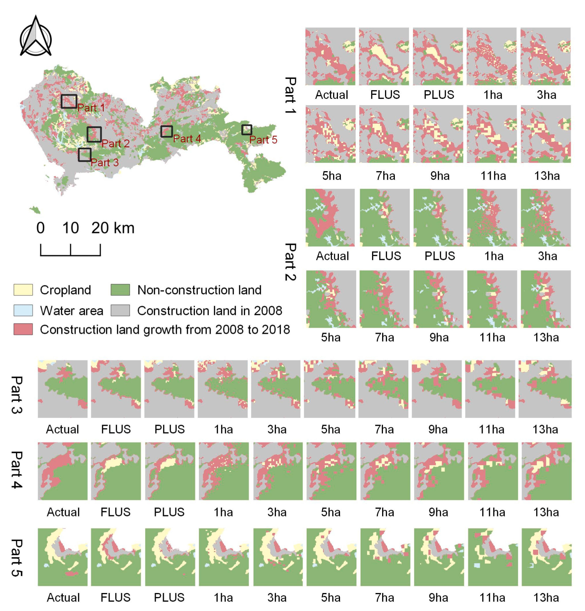

A comparative study of VCA, patch-based CA (PLUS), and pixel-based CA (FLUS) models for simulating land cover changes, with spatial scale sensitivity analysis across Shenzhen, China
* Corresponding author.
Computers, Environment and Urban Systems · 2024
Urbanization-induced land cover changes significantly impact ecological environments and socioeconomic growth. Vector-based cellular automata (VCA) models are an advanced cellular automata (CA) method that use irregular cells and perform well in simulating land use changes within urban areas. However, the applicability and parameter setting of VCA models for land cover change simulation are still challenging for researchers. To address this issue, this study applied a VCA model and two raster-based models, i.e., a pixel-based CA model and a patch-based CA model, to simulate and compare their performance in simulating land cover changes. The results show that VCA and patch-based CA were superior, with VCA's FoM being 39.74% higher than pixel-based CA and 11.00% over patch-based CA. VCA effectively tracks construction land expansion in rapidly developing areas, while patch-based CA excels in central urban and suburban shifts, fitting broader study scopes. Additionally, a spatial scale sensitivity analysis of the VCA model revealed that a smaller VCA cell size improves accuracy but introduces a risk of spatial pattern errors. Notably, the scope of study impacts VCA accuracy more than cell size. These findings bolster land cover change modeling theory and offer insights for precise future land cover change simulations and decision-making.
Cellular automata (CA) models are widely used to simulate land cover spatiotemporal dynamics, but traditional raster CA models (e.g., FLUS, PLUS) represent urban space with regular pixels, which cannot fully capture irregular parcel-based urban structures. VCA models address this limitation by using irregular polygons, aligning better with planning practice. However, VCA has mainly been applied to urban land use types; whether it works well for natural land cover — with its fragmented patches and irregular pattern — is unknown.
This study fills that gap by systematically comparing VCA, PLUS, and FLUS on land cover simulation in Shenzhen. We quantify urban expansion patterns via the Expand Intensity Index (EII), evaluate each model's strengths in different expansion contexts, and conduct a spatial scale sensitivity analysis on VCA's cell size parameter. The goal is to provide practical guidance for model selection and parameter calibration in land cover change research.
The workflow comprises three stages: (1) Data preprocessing — raster land cover data is converted to vector parcels and split via the Minimum Area Boundary Rectangle (MABR) method; (2) Simulation — FLUS, PLUS, and VCA are each used to predict 2018 land cover based on 2008 data, driven by 14 natural, traffic, and socioeconomic factors; (3) Scale sensitivity analysis — VCA is tested across different cell sizes to examine its spatial scale uncertainty.
The three models differ fundamentally: FLUS uses ANN with self-adaptive inertia on regular pixels; PLUS uses Random Forest (RF) with the LEAS strategy and CARS patch-seeding mechanism; VCA also uses RF but on irregular parcels, with a centroid-intercepted area-weighted buffer for neighborhood effects. Accuracy is assessed via OA, Kappa, and FoM; landscape pattern similarity is measured by six landscape indices (Area_MN, ED, LPI, AI, LSI, PAFRAC); and spatial expansion intensity is quantified by EII.

Shenzhen is a rapidly urbanizing city in southern China (~2000 km²). Land cover data from CNLUCC (30 m, 2008–2018) was reclassified into four types: cultivated land, non-construction land, water area, and construction land. Fourteen driving factors were included: natural (elevation, slope, distance to river/coastline), traffic (distance to roads, railways, subway, bus density), and socioeconomic (distance to medical, schools, entertainment, housing prices).
PLUS achieved the highest OA, while VCA attained the highest FoM — 39.74% above FLUS and 11.00% above PLUS — because VCA better captures actual non-construction-to-construction transitions. All models exceeded Kappa > 0.75, confirming reliability. In terms of landscape patterns, FLUS best captured fragmentation and shape complexity, PLUS excelled at dominant patch aggregation, and VCA maintained better landscape compactness and regularity. However, none of the models fully replicated Shenzhen's increasingly compact urban form.
VCA outperformed in districts with rapid construction expansion — Guangming, Longhua, and Longgang (EII values of 2.05%, 1.16%, 1.00%), where it exceeded the average FoM by 45%. VCA's FoM correlated strongly with EII (r = 0.79 vs. 0.67 for PLUS), confirming its superiority for modeling infill growth. In contrast, PLUS performed better in mature central districts (Futian, Luohu) where construction land nears its limit (EII ≈ 0.15%).


As VCA cell size increased from 2 to 10 ha, accuracy indices declined (48.7% of FoM decrease occurred within 5–7 ha; Kappa fell below 0.75 at >6 ha), while landscape similarity rose sharply, peaking at 94.6% at 10 ha. Small cells (< 5 ha) caused severe landscape fragmentation, reducing similarity by 73.4%. Two-way ANOVA showed that study scope (partial η² = 0.995) had far greater influence than cell size (partial η² = 0.853). A 5 ha cell size was recommended as the optimal balance for Shenzhen.
Detailed analysis revealed three distinct expansion patterns: infill adjacent to existing patches (Guangming), mixed filling and edge growth (Longhua, Nanshan, Longgang), and leap-like growth away from original boundaries (Dapeng). The VCA model with a smaller cell size best captured the orientation and amplitude of construction land expansion, guiding urban growth to concentrate in areas with strong local effects. PLUS and FLUS were largely limited to simulating edge expansion along existing urban boundaries.

The core contribution is the first systematic multi-model comparison of VCA and raster CA for land cover change simulation. Both VCA and PLUS achieve high accuracy (OA > 0.85, Kappa > 0.75, FoM > 0.3), confirming VCA's applicability beyond urban land use to natural land cover. VCA's FoM surpasses FLUS by 39.74% and PLUS by 11.00%, demonstrating its ability to capture spatial heterogeneity through irregular parcel-based cellular space.
VCA excels at infill expansion in fast-growing districts (high EII), concentrating growth in areas with strong local effects. PLUS is better suited for edge expansion in mature centers and suburbs (lower EII), with a unique patch-seeding mechanism that partially captures leapfrog growth and offers higher computational efficiency for large study extents. Model selection should align with regional development characteristics.
Finer cells improve accuracy but fragment the landscape (similarity drops 73.4%); coarser cells preserve pattern but lose detail. A 5 ha cell size balances both. Crucially, study scope (partial η² = 0.995) has a much greater impact than cell size (partial η² = 0.853) — meaning regional heterogeneity outweighs parameter tuning.
The single-city case (Shenzhen) limits generalizability, and only cell size was examined among VCA parameters. Future studies should test VCA across diverse regions and conduct comprehensive sensitivity analysis on neighborhood strategies and transition rules.
@article{yao2024applicability,
title={Applicability and sensitivity analysis of vector cellular
automata model for land cover change},
author={Yao, Yao and Jiang, Ying and Sun, Zhenhui and
Li, Linlong and Chen, Dongsheng and Xiong, Kailu and
Dong, Anning and Cheng, Tao and Zhang, Haoyan and
Liang, Xun and Guan, Qingfeng},
journal={Computers, Environment and Urban Systems},
volume={109},
pages={102090},
year={2024},
doi={10.1016/j.compenvurbsys.2024.102090}
}